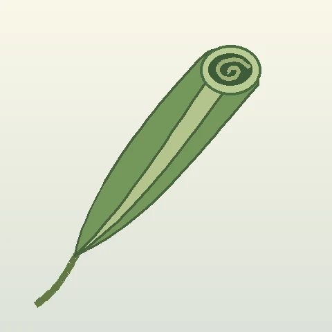

Leafrollers
Leaves rolled into tubes
This is one possible explanation. Compare the signs below with those on your plant.

What to look for
Gently open one rolled leaf and look for silk, droppings or a larva.
Possible causes and next steps
Some larvae roll leaves for shelter. If no insect evidence is present, check drought and heat stress.